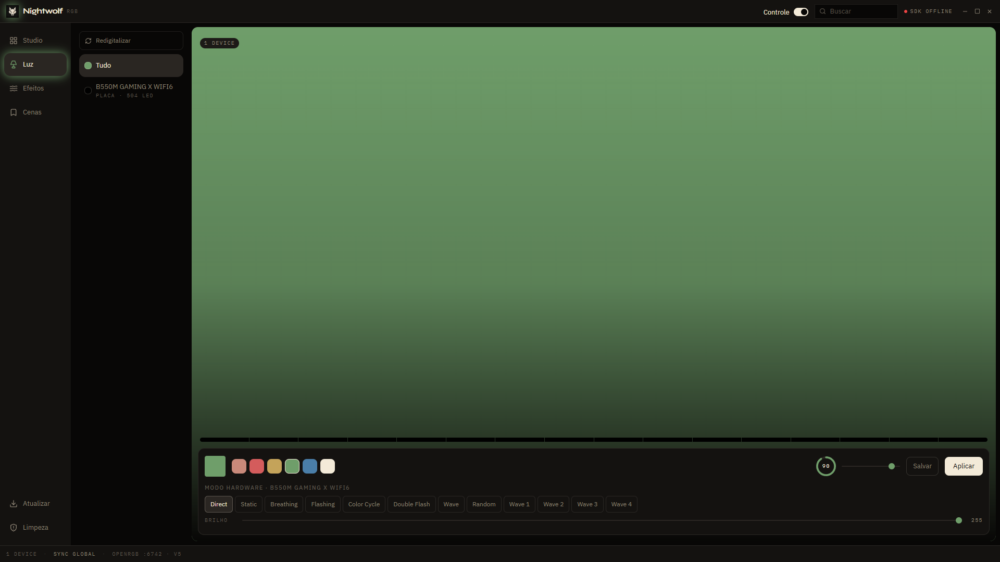
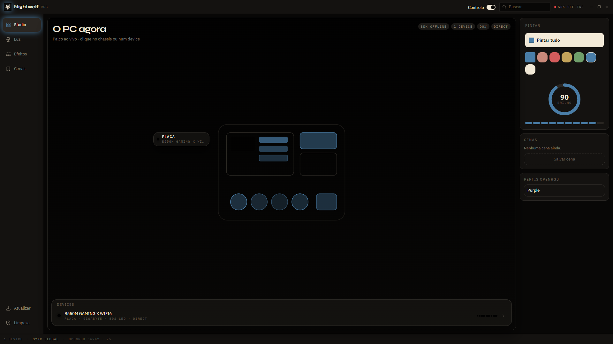
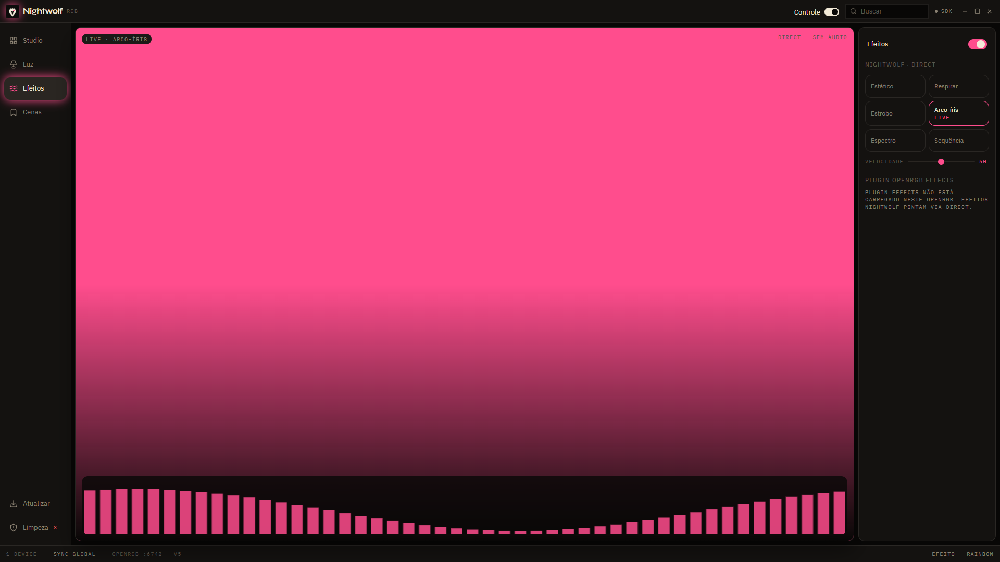
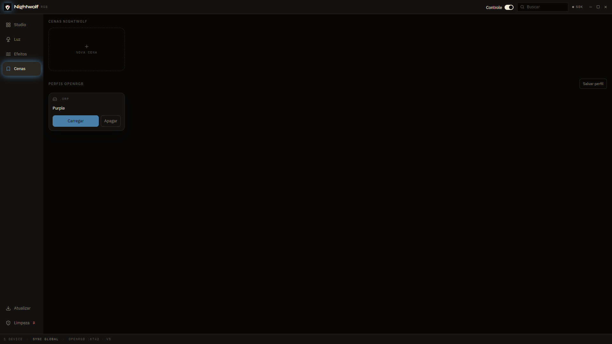

Não é uma cor no gabinete. É cada LED.
Na Luz você escolhe o device, a zona, o LED. Header vazio? O slider manda o tamanho. Direct, Static, Breathing, Color Cycle — os modos que a placa declara, com os parâmetros que cada um aceita.

Windows · motor OpenRGB
Sem iCUE. Sem conta. O OpenRGB vem no bundle — 100% compatível. Você pinta o hardware. Pronto.

O motor
Nightwolf não inventa outro SDK. Pinta em cima do OpenRGB. O app sobe o engine. Porta 6742. Neste PC: protocolo v5. Identidade, modos, zonas, LED a LED, matrix, resize, .orp nativo.
Crédito: openrgb.org · GitLab · CalcProgrammer1/OpenRGB
Sem nuvem. Sem celular. Sem loja de plugin. Atualizar no app e nightwolfrgb update puxam a release no GitHub e checam o OpenRGB do bundle. Não há Setup.exe.
Na Luz você escolhe o device, a zona, o LED. Header vazio? O slider manda o tamanho. Direct, Static, Breathing, Color Cycle — os modos que a placa declara, com os parâmetros que cada um aceita.

Estático, Respirar, Estrobo, Arco-íris, Espectro, Sequência. Velocidade no slider. Direct, sem microfone. Se o plugin Effects já estiver no OpenRGB do bundle, liga e desliga por nome. Sem instalar. Sem baixar.

Cena grava o estado neste app. Perfil .orp é o arquivo nativo do OpenRGB: carregar, salvar, apagar. Os dois na mesma tela. Separados.

iCUE, Armoury Crate, Synapse e o resto travam a mesma placa. A Limpeza lista os processos RGB do Windows — com nome — e fecha os que você pede. Só no Windows. Só quando você manda.
Windows. O zip mora no GitHub Releases. O script instala — PowerShell ou Git Bash. Depois, nightwolfrgb update ou Atualizar no app. Os dois também checam o OpenRGB.
irm https://github.com/klebertiko/NightwolfRGB/releases/latest/download/install.ps1 | iexcurl -fsSL https://github.com/klebertiko/NightwolfRGB/releases/latest/download/install.sh | bashIssues e pull requests em klebertiko/NightwolfRGB. Motor: OpenRGB. Para rodar do clone:
npm install
npm run desktop